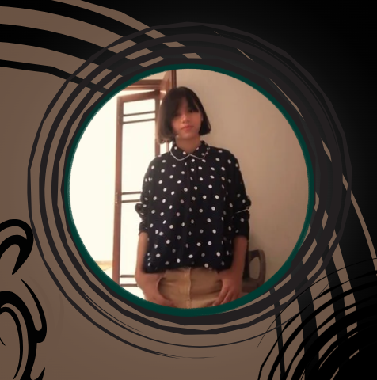

About Me

Hi, Readers. I am Zunaira. I am 13 years old and I am a writer on Medium.
I write whenever it feels heavy. I am sure you all have heard that line that says "we are writers, dear — we don't cry, we bleed on paper." It's the same thing with me.
I write every kind. I just write my thoughts. I can't tell what kind of stories I am going to write. I want to write bold — the kind of bold that everyone thought of alone, but were scared to say out loud.
And I have four cats. They teach me a lot. They teach me not only about cats, but about other animals as well. And that's what makes my writing even better.
And other thing that changed my point of view into an even better point of view is BTS. I can say they teach me more than my own family ever could.
I want readers to relate to my writing. And I want everyone to feel seen.
I want people to meet me on my own, by my own website.
With love,
— Zunaira